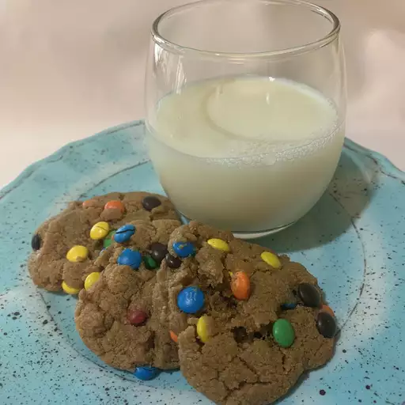

Peanut Butter M&M Cookies

Peanut Butter M&M Cookies
These cookies require no chill time, no mixers, and no flour! They're so fast, easy, and tasty, it's almost unbelievable!
Ingredients
- 1 Cup creamy peanut butter
- 3/4 Cup firmly packed brown sugar
- 2 Tablespoons firmly packed brown sugar
- 1 Large egg, at room temperature
- 1 Teaspoon baking soda
- 1 1/2 Teaspoons vanilla extract
- 1/4 Teaspoon salt
- 1/8 Teaspoon ground nutmeg
- 1/2 Cup mini candy-coated chocolate pieces
Steps
- Preheat the oven to 350 degrees F (175 degrees C). Line two baking sheets with parchment paper.
- Mix together peanut butter, 3/4 cup plus 2 tablespoons brown sugar, egg, baking soda, vanilla, salt,
and nutmeg until combined. Mix in mini chocolate M&Ms.
- Scoop out 1 1/2 tablespoon sized balls of dough and place 1 inch apart on the baking sheets.
Flatten dough balls to about 1/2 inch thickness.
- Bake in the preheated oven until tops of cookies begin to slightly crack, about 10 minutes.
Allow cookies to cool 10 minutes on baking sheets before removing to a wire rack to cool completely.